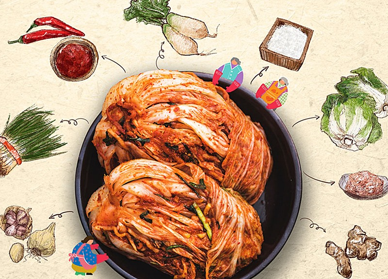
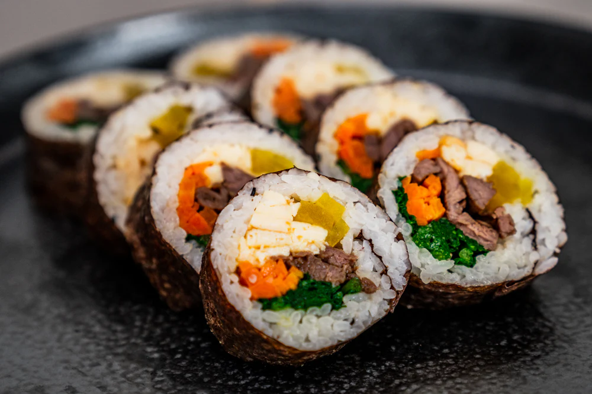
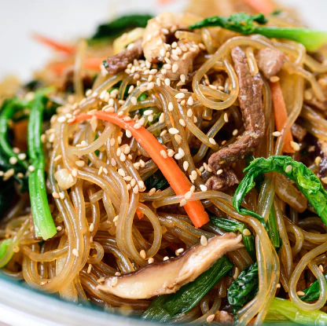
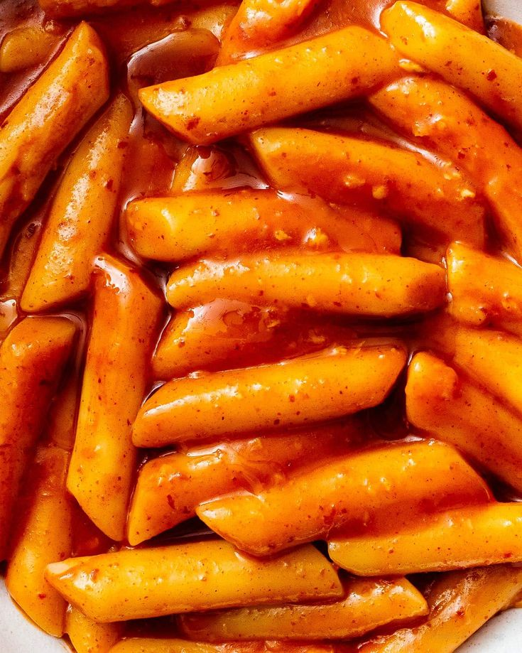
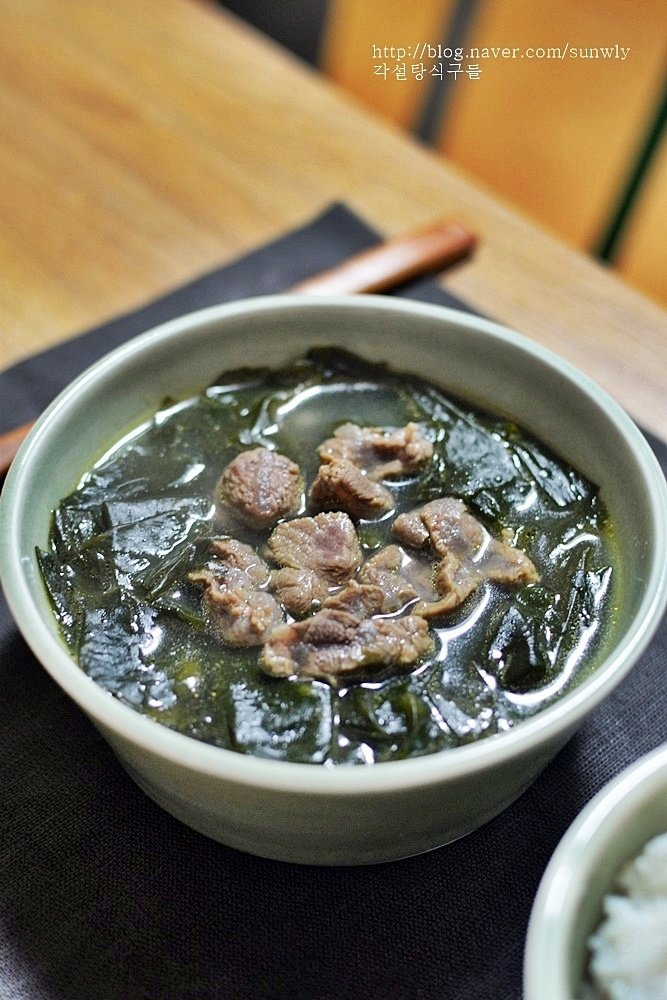
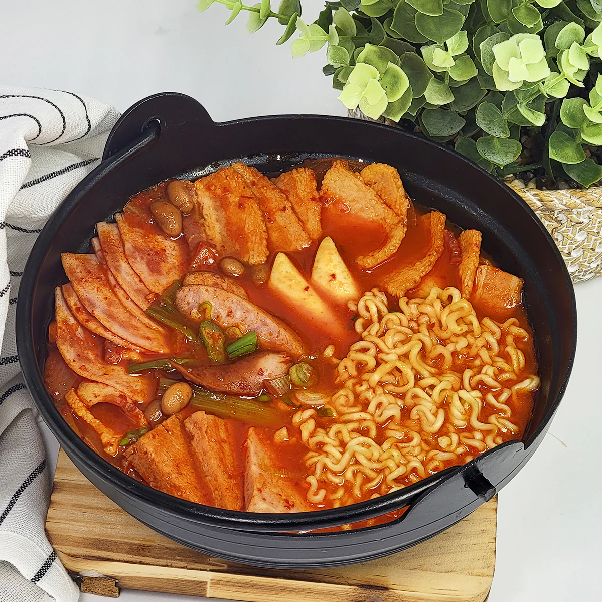

2. Bibimbap (비빔밥)

En la gastronomía coreana puedes encontrar un gran abanico de colores y sabores. El aceite de sésamo, la salsa soja, el ajo, el jengibre, la cebolla y la salsa roja de chile son algunos de los ingredientes usados para preparar y servir los platos coreanos más icónicos. Queremos presentar algunos de los platos más típicos y convencionales de su cocina. Otra de las singularidades de la comida coreana, es que los platos se sirven junto al banchan (반찬) una variedad de platillos acompañantes, principalmente verduras varias (sean fermentadas o no).
1. Kimchi (김치)

Si hay un plato típico en la mesa coreana es el kimchi. El kimchi es col fermentada cn distintas especias, normalmente picantes. El kimchi original es el de col, aunque hay variedades de kimchi como el de pepino o rábano. Dado sus ingredientes, su sabor es salado y picante y su olor bastante fuerte y peculiar. Es primordialmente puesto en la mesa como banchan, plato de acompañamiento, aunque también puede ser la base de algunos platos.
2. Bibimbap (비빔밥)
El Bibimbap es probablemente uno de los platos coreanos más conocidos a nivel internacional. Bibimbap simplemente se traduce como “arroz mezclado con carne y verduras variadas”. Aunque existen varias versiones de este plato de acuerdo a la región, por lo general se sirve como un tazón de arroz blanco tibio cubierto con namul (verduras salteadas y sazonadas), gochujang (pasta de chile), o doenjang (pasta de soja fermentada) y huevo frito.
3. Gimbap(김밥)

El Gimbap consiste en arroz blanco con otros ingredientes (normalmente verduras, carne, tortilla…) envueltos en una lámina de alga seca. Estos rollos se cortan en pequeñas rodajas para que se puedan comer de un bocado.
4. Japchae (잡채)

El Japchae es otro de los platos más típicos de la cocina coreana. Literalmente significa mezcla de verduras, aunque el ingrediente principal de este plato son los fideos de cristal hechos de boniato
5. Tteokbokki (떡볶이)

Se trata de un pastelito de arroz blanco,normalmente en forma de cilindro, hervido a fuego lento y sazonado generalmente con gochujang (pasta de chile). Es uno de los platos más picantes de la comida coreana.
6. Sopa de algas (미역국)

Miyeokguk es una sopa hecha de algas y se come tradicionalmente en los cumpleaños, para honrar a su madre, o después de dar a luz, aunque se puede comer en cualquier momento.
7. Budae jjigae (부대찌개)

Budae jjigae es un plato fusión en la cocina coreana que incorpora carnes procesadas estadounidenses como spam, jamón, bacon y salchichas en un estofado coreano con kimchi y noodles.
Su origen es bastante curioso y a la vez nostálgico: después de la guerra entre las Coreas, la comida era extremadamente escasa. Las carnes procesadas provenientes de las bases del ejército estadounidense ubicadas cerca a Seúl se convirtieron en una buena fuente de comida para los coreanos. Fue entonces que combinando aquellas carnes con ingredientes coreanos como el kimchi y los noodles instantáneos, se creo el primer plato fusión coreano-estadounidense que es este y que literalmente significa “Estofado del Ejército” o “Army Stew“.